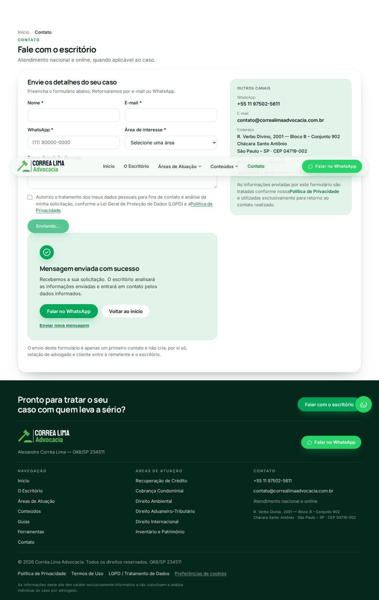
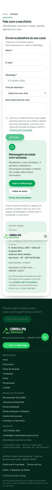
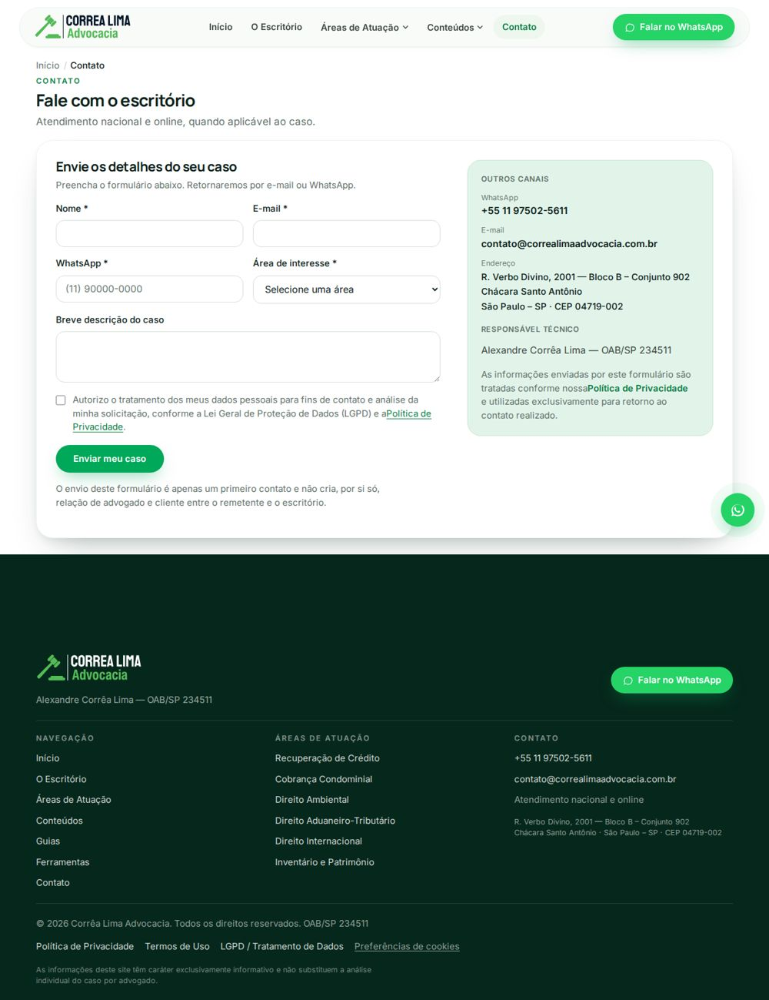
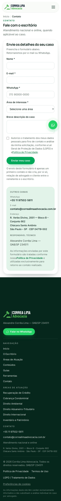
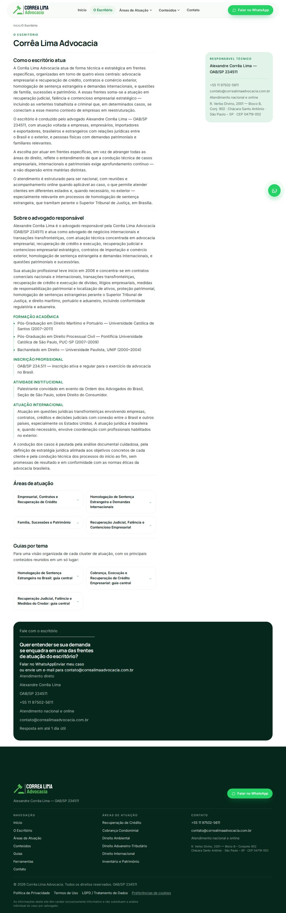
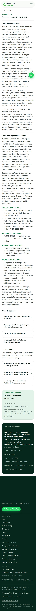
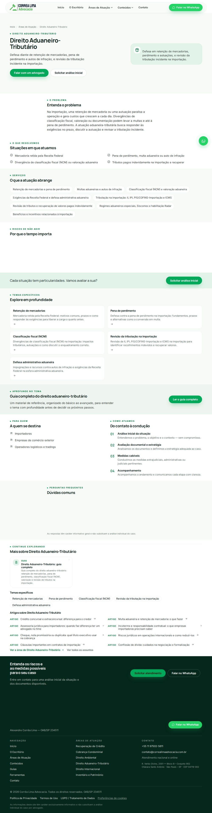
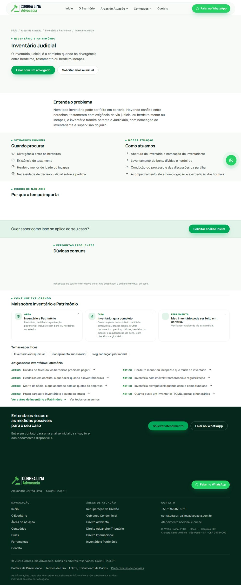

Corrêa Lima Advocacia · estados de sucesso/erro do formulário, contato compacto em uma seção, realce institucional e ajuste das transições de seção. Home, conteúdo, URLs e SEO preservados.
Antes, o retorno era o texto simples "Mensagem enviada." abaixo do botão. Agora o ContactForm tem estados completos:
role="alert", aria-live="assertive"), mantém os dados digitados, reabilita o botão e oferece o WhatsApp como alternativa.sending/done).aria-live="polite" e recebe foco (tabindex="-1"); erro por aria-live="assertive".required, type=email) com reportValidity(); contraste dentro do padrão do site.

| Cenário | Resultado |
|---|---|
| Preenchimento válido + envio → sucesso | form ocultado ✓ · card de sucesso exibido ✓ |
| Enviar nova mensagem | formulário volta ✓ · campos limpos ✓ |
| Erro de rede | painel de erro ✓ · dados mantidos ✓ · botão reabilitado ✓ |
| LGPD não marcado | envio bloqueado ✓ |
| Envio duplicado | travado por sending/done ✓ |
O formulário era uma pilha vertical de campos (exigia rolar). Agora usa grade de 2 colunas: Nome + E-mail numa linha, WhatsApp + Área noutra, mensagem em linha cheia, LGPD e botão. Reduzi o espaçamento do topo, do cartão e entre campos, e a altura do textarea.
Medição: em 1440×900, o cartão inteiro (título, campos, LGPD, botão e canais) termina exatamente na dobra — sem rolar entre os campos. No mobile, o formulário vira uma coluna e cresce naturalmente (conforme pedido). A coluna lateral mantém WhatsApp, e-mail, endereço e responsável técnico.


Era um bloco de texto corrido. Sem reescrever nada, apliquei realce visual sobre o conteúdo existente:
Nenhum fato, número, prêmio ou credencial foi inventado — apenas reorganização visual do que já existia.


Causa: na sprint anterior o hero das áreas ficou mais baixo (~427 px) que o hero aprovado da Home (~508 px), fazendo o "O PROBLEMA / Entenda o problema" aparecer alto e parecer cortado.
Solução: igualei a altura do hero das áreas à da Home usando padding proporcional (não viewport, sem 100vh/calc). Agora o heroBottom das áreas fica em ~568–579 px, em linha com a Home (~585–593 px) — a mesma transição limpa da referência aprovada.
| Página | heroBottom (após) | Referência Home |
|---|---|---|
| Área (1440×900) | 573 px | 586 px |
| Área (1920×1080) | 579 px | 593 px |
| Área (1366×768) | 568 px | 585 px |
Variantes de hero em uso: hero--landing (áreas, padding proporcional ~igual à Home), hero--index (listagens, compacto), hero--article (artigos/guias), hero--institutional (institucionais), hero--contact (contato compacto).


| Página | Ação |
|---|---|
| /contato/ + ContactForm | Reorganizado (2 colunas) + estados de sucesso/erro/carregamento |
| /o-escritorio/ | Realce institucional (cards, fichas, separadores) |
| Áreas de Atuação + Subáreas | Hero igualado à Home (transição de seção) |
| Home | Não alterada |
| Blog / Assuntos / Guias / Ferramentas | Já com cards/grid — mantidas |
| Artigos / Guias individuais | Já editoriais (índice, callouts, RelatedHub) — mantidas |
| LGPD / Termos / Privacidade / Áreas (índice) | Já equilibradas — mantidas |
Modificados:
src/components/ContactForm.astro — reescrito: grade 2 colunas + sucesso/erro/carregamento + a11y + antiduplicidade
src/pages/contato/index.astro — espaçamentos compactados (form em uma seção)
src/pages/o-escritorio/index.astro — realce (classes em blocos conhecidos) + CSS institucional
src/components/PillarPage.astro — .p-hero: padding igual à Home
src/components/SubPage.astro — .s-hero: idem
Criados: nenhum arquivo novo (reaproveitados Icon, Container, Breadcrumb, tokens e botões existentes).
Removidos: nenhum.
Não alterado: conteúdo jurídico/institucional (só reorganização visual), URLs, slugs, canonical, meta, JSON-LD, sitemap, Analytics/Consent/IndexNow, WhatsApp, logo, cores, Home, informações de contato.
dist/ (site já compilado).public_html/ (ou a pasta do domínio).dist/ (não a pasta dist em si) para public_html/, substituindo os arquivos existentes. Inclui index.html, as pastas de rotas, brand/, sitemap.xml, robots.txt etc.https://correalimaadvocacia.com.br/contato/ e envie um teste real para validar o Formspree e o card de sucesso.Para editar e recompilar no futuro: npm install → npm run build (gera novamente dist/).